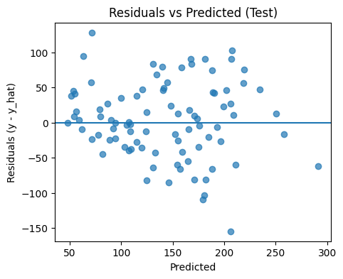
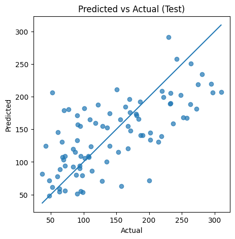
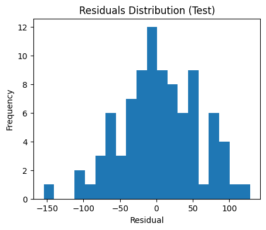
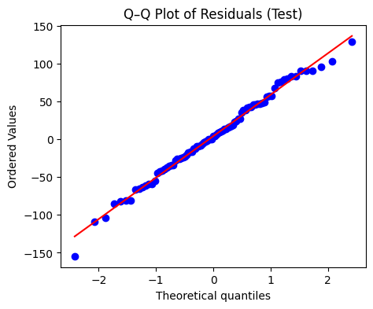

In this lesson we focus on how to evaluate regression models. We’ll compute standard quantitative metrics and use visual diagnostics to understand error structure. We’ll also introduce cross‑validation and learning curves to reason about generalisation and data sufficiency.
Learning objectives - Compute and interpret \(\text{MSE}\), \(\text{RMSE}\), \(\text{MAE}\), and \(R^2\) on train/test splits. - Create residual diagnostics: residuals vs predictions, predicted vs actual, and residual histograms (plus an optional Q–Q plot). - Use cross‑validation to obtain more stable performance estimates. - Plot and read learning curves; understand under/overfitting and data needs.
Quantitative Metrics (Theory)
Let \(\{(x_i, y_i)\}_{i=1}^n\) be the dataset and \(\hat{y}_i\) the model predictions.
Rules of thumb - Lower RMSE/MAE is better; compare across models trained on the same target and scale. - Higher \(R^2\) is better; negative \(R^2\) can occur on test data (worse than predicting the mean).
Compare train vs test. A large gap (train much better) suggests overfitting; both poor suggests underfitting or model misspecification.
Prefer RMSE or MAE for interpretability (units of the target).
Visual Diagnostics
Residual plots help us see patterns that metrics cannot reveal. - Residuals vs Predicted: check linearity and homoscedasticity. - Predicted vs Actual: overall calibration (points near the diagonal are better). - Residual Histogram: rough normality check (useful for inference). - Q–Q plot (optional): a more formal normality visual.
# Residual diagnosticsimport matplotlib.pyplot as pltimport numpy as npresiduals_train = y_train - y_pred_trainresiduals_test = y_test - y_pred_test# Residuals vs Predicted (Test)plt.figure(figsize=(5,4))plt.scatter(y_pred_test, residuals_test, alpha=0.7)plt.axhline(0)plt.xlabel("Predicted")plt.ylabel("Residuals (y - y_hat)")plt.title("Residuals vs Predicted (Test)")plt.show()# Predicted vs Actual (Test)plt.figure(figsize=(5,5))plt.scatter(y_test, y_pred_test, alpha=0.7)lo =min(y_test.min(), y_pred_test.min())hi =max(y_test.max(), y_pred_test.max())plt.plot([lo, hi], [lo, hi])plt.xlabel("Actual")plt.ylabel("Predicted")plt.title("Predicted vs Actual (Test)")plt.show()# Residual histogram (Test)plt.figure(figsize=(5,4))plt.hist(residuals_test, bins=20)plt.xlabel("Residual")plt.ylabel("Frequency")plt.title("Residuals Distribution (Test)")plt.show()



Optional: Q–Q Plot
A Q–Q plot compares residual quantiles to those of a normal distribution. - Straight line \(\Rightarrow\) residuals approximately normal. - Heavy tails or curvature \(\Rightarrow\) departures from normality (affects inference more than prediction).
# Optional Q–Q plot (requires scipy). If not installed on the platform, skip this cell.try:import scipy.stats as statsimport matplotlib.pyplot as plt fig = plt.figure(figsize=(5,4)) ax = fig.add_subplot(111) stats.probplot((y_test - y_pred_test), dist="norm", plot=ax) ax.set_title("Q–Q Plot of Residuals (Test)") plt.show()exceptExceptionas e:print("Skipping Q–Q plot (scipy likely not available in this environment):", e)

Interpreting diagnostics - Non-linearity: Curvature in residuals vs predicted suggests the linear model is missing structure (consider trees, interactions, or basis expansions). - Heteroscedasticity: Cone/funnel shapes indicate variance depends on \(\hat{y}\); robust losses or transforms may help. - Outliers/Influential points: Large residuals can unduly affect fit; consider robust models or inspection.
Cross‑Validation
Train/test splits can be noisy. \(k\)‑fold cross‑validation averages performance across \(k\) folds to reduce variance.
We’ll compute cross‑validated \(R^2\) and negative MSE (higher is better for \(R^2\); less negative is better for MSE). Use n_jobs=-1 to enable implicit parallelism on NCI ARE.
If performance varies widely across folds, model/data are sensitive to splits (consider more data, regularisation, or different features).
Learning Curves
Learning curves show training and validation performance as a function of training set size. They help diagnose: - High bias (underfitting): both curves converge to a poor score. - High variance (overfitting): large gap between curves that narrows with more data.
Reading the curve - If both curves plateau at a low\(R^2\), the model is bias‑limited (try richer models or features). - If the gap remains large, the model is variance‑limited (try regularisation, more data, or ensembles).